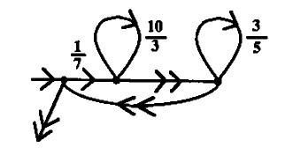
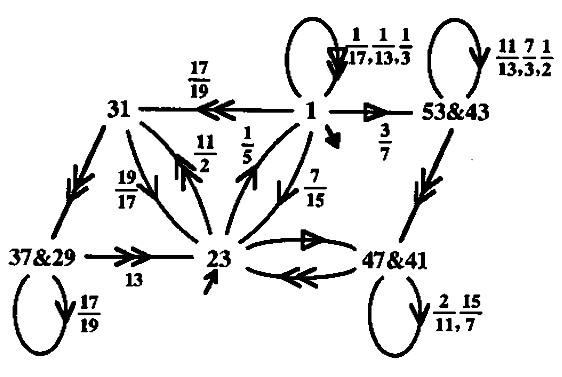
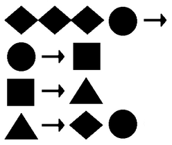
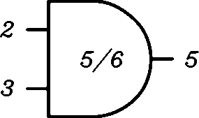
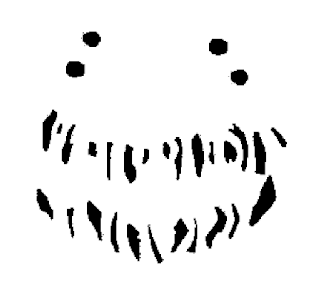
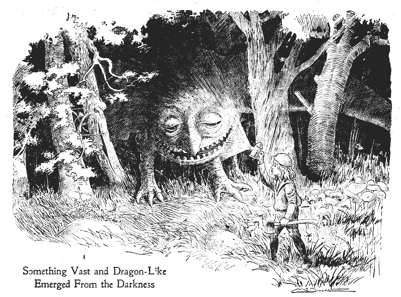
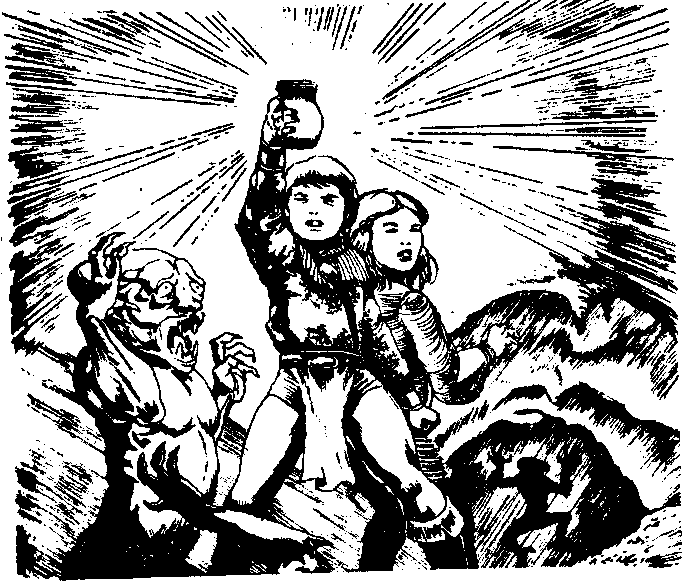
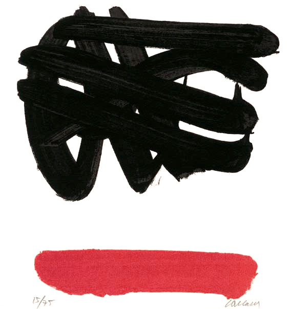
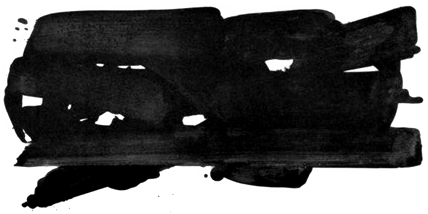

The documentation below will not display the empty rule, and split the evalation steps from the program.
Rewriting languages are typically made of rules and an initial state.

A program begins with a series of rules which define tokens to match, and the resulting transformation. When a rule consumes a specific token during the application, we'll call this token the reagent. When a rule utilizes a specific token that survives the rewrite, we'll call it the catalyst.
Fizzbuzz, in Modal.
<> ((print-word ?:) ?i ?f ?b) ((print-line \n) ?i ?f ?b) <> ((print-line ?:) ?i ?f ?b) ((?i) (?f) (?b)) <> (100 ?f ?b) (done.) <> (?i 3 5) ((print-word FizzBuzz) ?i 0 0) <> (?i 3 ?b) ((print-word Fizz) ?i 0 ?b) <> (?i ?f 5) ((print-word Buzz) ?i ?f 0) <> (?i ?f ?b) ((print-word ?i) ?i ?f ?b) (0 0 0)
Fizzbuzz, in Fractran.
:: Fizz > :: Buzz > :: eval #i^100 > :: eval f^3 b^5 > incr Fizz Buzz :: eval f^3 > incr Fizz :: eval b^5 > incr Buzz :: eval > incr :: incr > #i f b eval incr
- Pocket Rewriting, a multiset rewriting zine.
- Horadric, a rewriting mailing list.
Fractran is a computer architecture based on the multiplication of fractions.
A prime is a number that can only be divided by itself and one, since these numbers can't be divided, they can considered the atoms of other numbers. The factoring of a number into prime numbers, for example: 18 = 2 × 32(r2 = 1, r3 = 2), exposes values which Fractran utilizes as registers.
The Bag is a single number whose prime factorization holds the value of registers(2, 3, 5, 7, 11, 13, 17, ..). For example, if the state of the bag is 1008(2⁴ × 3² × 7), r2 has the value 4, r3 has the value 2, r7 has the value 1, and all other registers are empty.
| Bag | Registers | |||
|---|---|---|---|---|
| r2 | r3 | r5 | r7 | |
| 6 | 1 | 1 | ||
| 18 | 1 | 2 | ||
| 1008 | 4 | 2 | 1 | |
A Rule is represented by a fraction that tests one or more registers. To evaluate the result of a fraction, if multiplying the bag by this fraction gives an integer, in other words, if the bag contains the symbols in the denominator, we remove them and add the symbols in the numerator.
| 2/3 | 15/256 | 21/20 |
|---|---|---|
| 21/31 | (31 × 51)/28 | (31 × 71)/(22 × 51) |
if(r3 >= 1){ r3 -= 1; r2 += 1; return; } |
if(r2 >= 8){ r2 -= 8; r3 += 1; r5 += 1; return; } |
if(r2 >= 2 && r5 >= 1){ r2 -= 2; r5 -= 1; r3 += 1; r7 += 1; return; } |
To summarize: the bag holds the state of the program. The state is expressed as symbols in a bag encoded as prime factors. Each fraction acts as a rewrite rule that transforms the number of symbols in the bag.

A Notation
While Fractran is commonly reduced to just another opaque esoteric language, portraying it as such is doing a disservice to the relatively simple idea at its core and to the researchers who might otherwise benefit to venture deeper into a relatively unexplored field of computation.
If we think of Fractran as a rewriting language in which prime registers can be assigned a name, and fractions as symbolic rewrite rules, we can de-obfuscate a program. For the documentation below, we will use the Rejoice Notation.
Multiset sounds too technical.
Dijkstra's bag, not technical enough.
Programming In Fractran
Evaluation consists of testing each fraction in a sequence from the first to the last, when a fraction multiplied by the value of the bag gives a whole number, the bag is updated by the product of that multiplication, and search for the next rule starts back again from the beginning.
- For each fraction in a list for which the multiplication of the bag and the fraction is an integer, replace the bag by the result of that multiplication.
- Repeat this rule until no fraction in the list produces an integer when multiplied by the bag, then halt.
sugar oranges apples cherries flour apples @t ( 7/30 ) [t apple-cake]/[flour sugar apples] ( 17/715 ) [t fruit-salad]/[apples oranges cherries] ( 19/119 ) [t fruit-cake]/[fruit-salad apple-cake]
21450 flour.2 sugar.3 apples.5 apples.5 oranges.11 cherries.13 21450 × 7/30 = 5005 apples.5 apple-cake.7 oranges.11 cherries .13 5005 × 17/715 = 119 apple-cake.7 fruit-salad.17 119 × 19/119 = 19 fruit-cake.19
Fractran has a single operation,
and can be explained in 10 seconds.

Loops
Loops are a useful and common construct in programming, here is an example program in the imperative style that cycles through the four seasons until it reaches the autumn of the year two:
while(year++) {
for(season = 0; season < 4; season++) {
if(year == 2 && season == 3)
return print("Reached!");
}
}
To create a loop, a rewriting program relies on cycling back onto a term and the boundary of a loop is done by catching the ending case. Now, if we translate the above program into rewrite rules:
spring @t [t .Reached!]/[autumn year^2] [t summer]/spring [t autumn]/summer [t winter]/autumn [t spring year]/winter
Looking at the trace of the evaluation, we can see the following transformations:
7 spring 7 × 11/7 = 11 summer 11 × 3/11 = 3 autumn 3 × 13/3 = 13 winter 13 × 14/13 = 14 year spring 14 × 11/7 = 22 year summer 22 × 3/11 = 6 year autumn 6 × 13/3 = 26 year winter 26 × 14/13 = 28 year^2 spring 28 × 11/7 = 44 year^2 summer 44 × 3/11 = 12 year^2 autumn 12 × 5/12 = 5 Reached!

Logic
Binary logic is typically implemented as multiple rules, where each is a
potential location in the truth table, notice how it needs a sentinel symbol and? to catch the absence of inputs.
x y and? @t [t true]/[x y and?] [t false]/[x and?] [t false]/[y and?] [t false]/[and?]
The comparison operations are implemented using a loop that drains the registers until only the offset remains:
x^4 y^3 gth? @t [t gth?]/[x y gth?] [t true]/[x gth?] [t false]/[gth?]
2160 × 5/30 = 360 x^3 y^2 gth? 360 × 5/30 = 60 x^2 y gth? 60 × 5/30 = 10 x gth? 10 × 7/10 = 7 true
A similar set of rules can check if a register is odd or even:
x^7 even? @t [t even?]/[x^2 even?] [t false]/[x even?] [t true]/[even?]

Arithmetic
The sum of two registers(x+y) can be reached by writing the result in a third register(sum):
x^4 y^2 add @t [t sum add]/[x add] [t sum add]/[y add] t/add
2352 × 15/6 = 5880 x^3 add sum y^2 5880 × 15/6 = 14700 x^2 add sum^2 y^2 14700 × 15/6 = 36750 x add sum^3 y^2 36750 × 15/6 = 91875 add sum^4 y^2 91875 × 15/21 = 65625 add sum^5 y 65625 × 15/21 = 46875 add sum^6 46875 × 1/3 = 15625 sum^6
Alternatively, the result can also be reached by moving the value of one register into the other:
x^4 y^2 add @t [t y add]/[x add]
The difference between two registers(x-y) can be reached by consuming the value of two registers at once, and moving the remains into a third(pos) and fourth(neg) to get the signed result:
x^4 y^6 sub @t [t sub]/[x y sub] [t sub pos]/[x sub] [t sub neg]/[y sub] t/sub
58320 × 5/30 = 9720 x^3 y^5 sub 9720 × 5/30 = 1620 x^2 y^4 sub 1620 × 5/30 = 270 x y^3 sub 270 × 5/30 = 45 y^2 sub 45 × 55/15 = 165 y sub neg 165 × 55/15 = 605 sub neg^2 605 × 1/5 = 121 neg^2
The doubling of a register(x*2) is a matter of incrementing an output register twice for each input register values:
x^4 double @t [t res^2 double]/[x double] t/double
48 × 75/6 = 600 x^3 double res^2 600 × 75/6 = 7500 x^2 double res^4 7500 × 75/6 = 93750 x double res^6 93750 × 75/6 = 1171875 double res^8 1171875 × 1/3 = 390625 res^8
The halving of a register(x/2) is a matter of decrementing an input register twice for each output register value:
x^4 half @t [t res half]/[x^2 half] t/half
The product is reached from a series of additions, by copying the input register, into a temporary register and third result register.
x^3 y^2 @t [t x i]/[z i] t/i [t y z res]/[x y] [t i]/y t/x
675 × 70/15 = 3150 res x^2 y^2 z 3150 × 70/15 = 14700 res^2 x y^2 z^2 14700 × 70/15 = 68600 res^3 y^2 z^3 68600 × 11/5 = 150920 res^3 y z^3 i 150920 × 33/77 = 11880 res^3 x^3 y i 11880 × 1/11 = 1080 res^3 x^3 y 1080 × 70/15 = 5040 res^4 x^2 y z 5040 × 70/15 = 23520 res^5 x y z^2 23520 × 70/15 = 109760 res^6 y z^3 109760 × 11/5 = 241472 res^6 z^3 i 241472 × 33/77 = 19008 res^6 x^3 i 19008 × 1/11 = 1728 res^6 x^3 1728 × 1/3 = 64 res^6
Example: Fizzbuzz
To implement Fizzbuzz, we can increment registers for thirds and fifths to emit fizz and buzz at the proper intervals, while decrementing the upper boundary:
times^100 @t ( times -- num f b ) num f b [t .FizzBuzz\n]/[times f^3 b^5] [t .Fizz\n]/[times f^3] [t .Buzz\n]/[times b^5] [t .#num .\n]/times
Example: Fibonacci
Let's have a look at a real program to generate the Fibonacci Sequence(1, 1, 2, 3, 5, 8, 13, 21, 34..). This program uses catalysts(fib, fib.shift, fib.move) to keep the program state which has 3 phases(shift, move and back to fib) and ensures the correct evaluation order:
res n^5 last fib @t [t fib n B]/[fib n last] [t fib n A B]/[fib n res] [t fibrec]/[fib n] [t fibrec last]/[fibrec A] [t fibrec res]/[fibrec B] [t fib]/fibrec t/last
To dive deeper, have a look at the Fractran devlog.
Thue is a string-rewriting system.

A Thue program consists of two parts: a list of substitution rules, made of left and right sides separated by the spider operator(::=), terminated by an empty rule
with both sides empty, followed by a string representing the
initial program state:
left::=right a rule ::= an empty rule [left] the initial state
[right] the result
Execution consists of picking, from the list of rules, an arbitrary rule whose original string exists as a substring somewhere in the program state, and replacing that substring by the rule's replacement string. This process repeats until there are no rules that can be applied, at which point, the program ends.
Logic
Logic in Thue is defined by creating rules for the different states of the permutation of cases.
(or T T)::=T (or T F)::=T (or F T)::=T (or F F)::=F
(or (or T T) F) (or T F) T
Numbers
|, for 1||, for 2|||, for 3||||, for 4
There are no number systems built into Thue, but we can represent numbers as tally marks. For example, to get the sum of two numbers using tally marks, we can remove the operator to concatenate the two numbers(3 + 5):
+ ::=
||| + ||||| ||||||||
To get the difference of two numbers using tally marks, removing a mark from each side of the operator gives the result(5 - 3):
| - |::= -
||||| - ||| |||| - || ||| - | || -

Iterators
Iterators are not too different from tally marks, they can be cyclical(0, becoming 1, becoming 2, etc) or generalized and growing in size, to make a counter that waits for 8 ticks and expand over a length of memory:
.::=* *wait::=*done
.....wait *....wait **...wait ***..wait ****.wait *****wait *****done
Loops
Nested loops can be done in the style of Fractran, but since rules are evaluated in a non-deterministic fashion, boundaries cannot be generalized(year year year..), instead use specific tokens:
spring::=summer summer::=autumn autumn::=winter winter year1::=spring year2 winter year2::=reached
spring year1 summer year1 autumn year1 winter year1 spring year2 summer year2 autumn year2 winter year2 reached
Physics
Operating a rewriting system such as this one is sometimes akin to creating a physics engine where you move a cursor across the world, colliding along the way with places in memory to operate on.
>.::=.> >|::=*| *|::=.|
>....| .>...| ..>..| ...>.| ....>| ....*| .....|
Printing
Whenever the RHS of a rule begins with a tilde(~), the text to its right is sent to the output stream.
print::=~Hello World!\n ::= [print]
[print] []
Hello World!
Random
Rules are chosen randomly, making it possible, for example, to make a dice rolling program that might result in any of the possible values of a 6 sided die:
%text,::=~You rolled: %dice::=~1. %dice::=~2. %dice::=~3. %dice::=~4. %dice::=~5. %dice::=~6. ::= %%text,dice
%%text,dice %dice
You rolled: 3.
Enjoy playing with Thue, and be careful when it gets pitch black.
You are likely to be eaten by a Thue.

- Source, Uxntal.
- Repository
- Video
- Wiki page, Esolangs
- Chatroom, Discord
- Thue, Cat's Eye Technologies.

Vera is a multiset rewriting system.
Vera is a multiset rewriting system designed to converse with computers, created by the same author as Modal. A program is made entirely of facts and rules:
|| The first character in a file assigns a spacer glyph. || A program is made of rules and facts. || Two spacers indicate the creation of facts || Facts are separated by commas, a matchbox, a log, paper | A rule has a left side | And a right side. | Facts on the left side | are replaced by facts in the right side | a flame, a log | a warm fire | a matchbox | a match, a match, a box | a match, paper | a flame
Spacer
The first character in a file assigns a spacer glyph to be used to indicate rules and facts, the pipe character | is most commonly used:
| this is a rule | || this is a fact, this is another fact
Facts
A fact is the name for an item in the bag, the bag is the collection of all existing facts. A line starting with two spacing characters(also called an empty rule) will add facts to the bag, facts are comma separated:
|| a fact, another fact || one more fact, yet another, a last fact
Whitespace only exists to separate the words in a fact, but are not significant when matching facts. These 3 facts are equal:
|| a new fact, a new fact, a new fact
Multiple instances of the same facts can be created by using the colon character. There are same amount of instances of these two facts:
|| a, a, a, a, b:4
Rules
A rule is made of a left and often a right side, and indicate facts to remove and replace in the bag.
| a fact, another fact | the result | another rule | another result | a rule may not have a right side |
Evaluation
In turn, each rule is matched against the existing facts found in the bag, starting from the first rule, when a rule's left-hand side is found in the bag, these facts are replaced by the rule's right-hand side, and matching is started again from the top.
|flour, sugar, apples| apple cake |apples, oranges, cherries| fruit salad |fruit salad, apple cake| fruit cake || sugar, oranges, apples, apples, cherries, flour
Vera will match any amount found in the left-hand side, the following two rules are equivalent in Vera:
| an apple, hunger | a core | an apple, an apple, an apple, hunger | a core
Comments
Vera will discard a rule when all the facts found in its left-hand side are not present in any rule's right-hand side or declared as facts.
| yellow | This is a comment. | purple | This is not a comment. | # | This is also a comment. || purple
- Vera Interpreter(C89), ANSI C.
- A Raven's Flyby, tutorial.
- Vera Wiki
Interaction nets are a graph rewriting system.
Interaction nets(INs) encode computations in a graph of nodes that is rewritten until it stabilizes, they can capture all computable functions with no external machinery or a garbage collector. A computational step can be defined as a constant time operation, and the model allows for parallelism in which many steps can take place at the same time.
- Interaction Nets, Yves Lafont's original paper.
- A Programming Language for Interaction Nets, Ian Mackie
- A Low-level language for interaction nets, Shinya Sato
- A zine about interaction nets
Modal is a tree rewriting system.

Modal programs are represented as a series of substitution rules, applied to a given tree which gets continually modified until no rules match any given part of the tree. The two principal elements of Modal are:
The documentation below displays the examples as a series of rules, followed by the rewriting steps in the following format:
<> (Let's learn Modal!) This is a comment <> (hello) (good bye) This is a rule
(hello) world This is the input (good bye) world This is the result
Playground
Evaluation is done by scanning from left-to-right across a string that represents a serialized tree. Rules are tested against each node, when a match occurs, the left-hand side of the matching pattern is erased from the tree, the right-hand side of the rule is written in its stead, and scanning starts over at the start of the tree. The evaluation ends when no rule match.
Rules
To define a new rule, start with <>, followed by a left and a right statement, which is either a word, or a tree. The program evaluation starts at the first character of the string and walks through to the end trying to match a transformation rule from that location:
<> (a bat) (a black cat) <> (a person) (a bat)
(I am (a person)) (I am (a bat)) (I am (a black cat))
Modal is homoiconic, meaning that any string is a potential program and new rules can be composed directly during the evaluation.
Registers
Registers are ? prefixed identifiers bound to an address in a pattern used in rewriting. When a register is used in a pattern, and when we try to match a given tree with a pattern, each register is bound to a corresponding address to the left-side of the rule, and referenced to the right-side of the rule:
<> (copy ?a) (?a ?a) <> (swap ?x ?y) (?y ?x)
(copy cat) (swap bat rat) (cat cat) (swap bat rat) (cat cat) (rat bat)
When a register appears more than once in a rule, each instance is bound to the first address, but differently named registers can still match on the same pattern:
<> (compare ?x ?x) (same) <> (compare ?x ?y) (different)
(compare cat bat) (compare rat rat) (different) (compare rat rat) (different) (same)
Logic
Equality in logic can be implemented by defining the truth table the comparison as shown above, for binary logic we can expand on the idea:
<> (and #t #t) #t <> (or #t #t) #t <> (and #t #f) #f <> (or #t #f) #t <> (and #f #t) #f <> (or #f #t) #t <> (and #f #f) #f <> (or #f #f) #f <> (not #t) #f <> (not #f) #t
(not (and #t #f)) (not #f) #t
Building on the comparison rule above, we can write conditionals with a ternary statement:
<> (ife #t ?t ?f) ?t <> (ife #f ?t ?f) ?f <> (print ?:) ()
(ife #t (print True) (print False)) (print True)
True?:
Events are handled by special registers with IO capabilities, for example, the ?: emits a symbol to the console. Here is a little program that prints letters in a list.
<> (putrec (?: ?x)) (putrec ?x) <> (putrec (?:)) (done.)
(putrec (a (b (c (d (e)))))) (putrec (b (c (d (e))))) (putrec (c (d (e)))) (putrec (d (e))) (putrec (e)) (done.)
abcde?:
When giving a quoted symbol, like (0), to the ?: register, the value printed will be the depth of nesting.
<> (Get the result of: 3 + 2) <> ((?a) + ?b) (?a + (?b)) <> (0 + ?b) (sum ?b) <> (print (sum ?:)) ()
(print (add (((0))) ((0))))
5?:
Numbers
0, for 0(0), for 1((0)), for 2(((0))), for 3((((0))), for 4
Internally, Modal has no built-in arithmetic and represents numbers as the symbol 0 wrapped in a number of parentheses equal to its value. Luckily arithmetic operations can be re-created with rewrite rules, for example, here's a little program that calculates the difference of two numbers, by gradually removing the wrapping parentheses on both operands:
<> (Get the result of: 5 - 2) <> ((?a) - (?b)) (?a - ?b) <> (?a - 0) (difference ?a) <> (print (difference ?:)) (done.)
(print (5 - 2)) (print (((((0)))) - (0))) (print ((((0))) - 0)) (print (difference (((0))))) (done.)
3?:
Notice how Modal has neither a prefix, infix or postfix notation, it is merely defined within the rules. The Modal number encoding allows to do comparison between numbers and with it we can implement FizzBuzz:
<> ((print-word ?:) ?i ?f ?b) ((print-line \n) ?i ?f ?b) <> ((print-line ?:) ?i ?f ?b) ((?i) (?f) (?b)) <> (100 ?f ?b) (done.) <> (?i 3 5) ((print-word FizzBuzz) ?i 0 0) <> (?i 3 ?b) ((print-word Fizz) ?i 0 ?b) <> (?i ?f 5) ((print-word Buzz) ?i ?f 0) <> (?i ?f ?b) ((print-word ?i) ?i ?f ?b)
(0 0 0)
0
1
2
Fizz
4
Buzz
Fizz
7
8
Fizz
Buzz
11
Fizz
13
14
FizzBuzz..?:
Loops
In the absence of familiar programming prefabs like for() and
while(), it's normal to wonder how to replicate behaviors from
other programming languages. By defining the end case as a rule above the
incrementing rule, the program will effectively loop until the end case is
met:
<> (spring 3) (Three years later.) <> (spring ?year) (summer ?year) <> (summer ?year) (autumn ?year) <> (autumn ?year) (winter ?year) <> (winter ?year) (spring (?year))
(spring 0) (summer 0) (autumn 0) (winter 0) (spring (0)) (summer (0)) (autumn (0)) (winter (0)) (spring ((0))) (summer ((0))) (autumn ((0))) (winter ((0))) (spring (((0)))) (Three years later.)
Types
Understanding how to use type guards, which are just symbols like any other, to orchestrate a specific evaluation order is important to become proficient with Modal. Creating a type system is merely a matter of using stricter rules expecting a specific symbol. Notice in the example below, how the print rule expects a specific type of data before firing despite being declared first:
<> (print (Name ?:)) (done.) <> (get-name) (Name Eva)
(print (get-name)) (print (Name Eva)) (done.)
Eva?:
Lists
Lastly, the ideal data structure in Modal is a list, like (foo(bar (baz
()))), this gives more flexibility so that rewrite rules can be applied
to on items of an unknown length, in comparison with a tuple, like (foo bar baz), in which
the exact number of items must be known beforehand.
<> (reverse List (?x ?y) ?z) (reverse List ?y (?x ?z)) <> (reverse List ?empty ?list) (print List ?list) <> (print List (?: ?x)) (print List ?x) <> (print List ()) (done.)
(reverse List (m (o (d (a (l ()))))) ()) (reverse List (o (d (a (l ())))) (m ())) (reverse List (d (a (l ()))) (o (m ()))) (reverse List (a (l ())) (d (o (m ())))) (reverse List (l ()) (a (d (o (m ()))))) (reverse List () (l (a (d (o (m ())))))) (print List (l (a (d (o (m ())))))) (print List (a (d (o (m ()))))) (print List (d (o (m ())))) (print List (o (m ()))) (print List (m ())) (print List ()) (done.)
ladom?:
Here's something a bit more interesting, to find an item in a list, we move a cursor in and out of it. The program trace shows that the rule matches a symbol that goes deeper into the list, modifies itself and returns with the result symbol. This sort of mechanical transformation of programs is typical in Modal.
<> ((find ?target) ?target (?next ?tail)) ((found ?target) ?next ?tail) <> ((find ?target) ?head (?next ?tail)) (?head ((find ?target) ?next ?tail)) <> ((find ?target) ?head ()) ((unfound ?target) ?head ()) <> (?head ((found ?target) ?next ?tail)) ((found ?target) ?head (?next ?tail)) <> (?head ((unfound ?target) ?next ?tail)) ((unfound ?target) ?head (?next ?tail))
((find e) a (b (c (d (e (f (g (h ())))))))) (a ((find e) b (c (d (e (f (g (h ())))))))) (a (b ((find e) c (d (e (f (g (h ())))))))) (a (b (c ((find e) d (e (f (g (h ())))))))) (a (b (c (d ((find e) e (f (g (h ())))))))) (a (b (c (d ((found e) f (g (h ()))))))) (a (b (c ((found e) d (f (g (h ()))))))) (a (b ((found e) c (d (f (g (h ()))))))) (a ((found e) b (c (d (f (g (h ()))))))) ((found e) a (b (c (d (f (g (h ())))))))
That's it! I hope you enjoy exploring this strange programming language.

modal(adj.): of, or relating to structure as opposed to substance.
- Source, Uxntal.
- Repository, Uxntal.
- Discord channel
- Levels of Dynamic behavior in Modal
- This language is an original creation of wryl from 2018, who has courteously spent countless hours to help me progress with the language, much of the code above is derived from their research and merely made available here as to give this fantastic system a home on the internet.
incoming: pocket rewriting tote combinatory logic paper rewriting fractran fractran devlog thue interaction nets neur 2025 2024